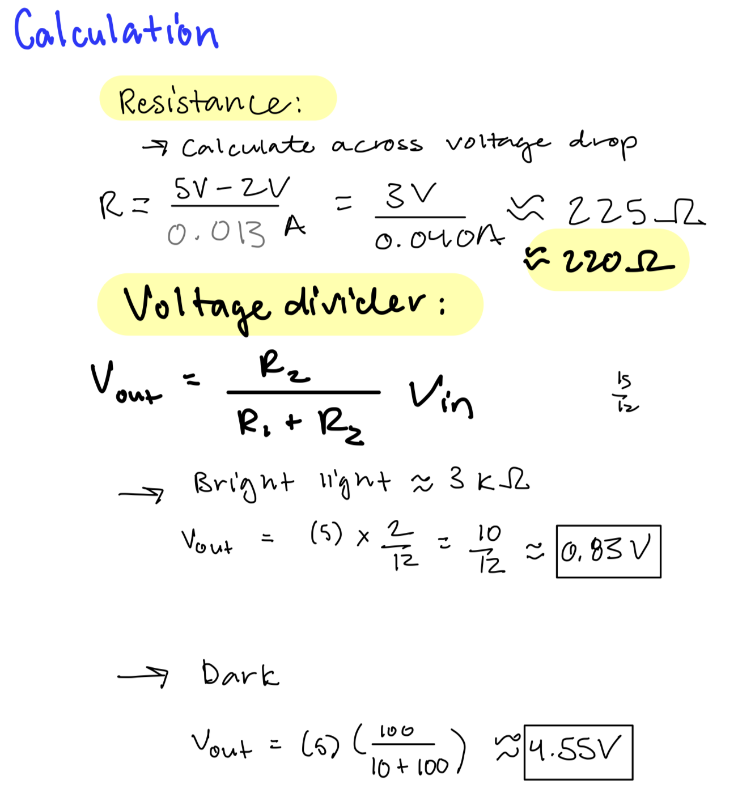
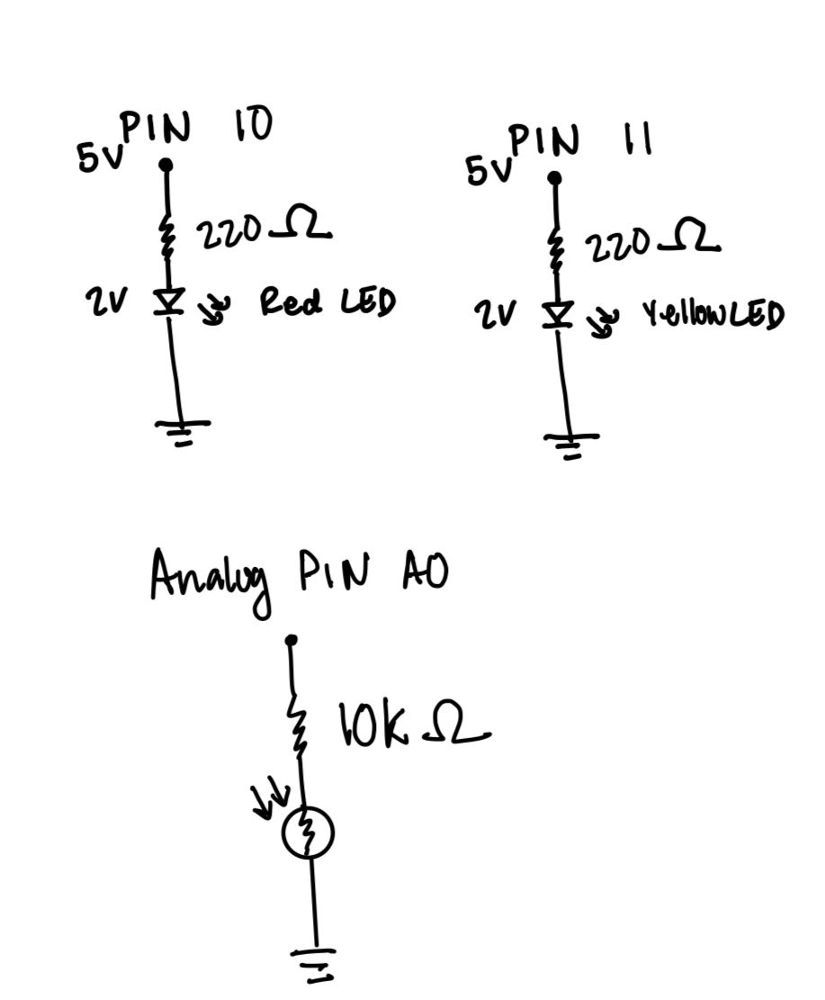

In Assignment 3, I created a prototype that changes light based on a change in the surrounding light! If the video above does not work, please visit the video at this link: Assignment 3 Video
Here is all the documentation for assignment 3!
Calculation:

Above are my calculations for the current, which determined the value of resistors I used. I chose 220 Ω resistors because after calculating the resistance using Ohm's Law and taking into account the voltage drops across the resistors, I found that 220 Ω would allow the current that passes through the circuit to stay under 40mA.
Schematic:

Here is the schematic diagram I drew for this assignment.
Overview Photo:

Here is a photo of the circuit I put together, based on my calculations.
Code Snippet
//declare the analog pin connected to the voltage divider
int sensorPin = A0;
//declare the first LED connected to pin 10
int ledOne = 10;
//declare the second LED connected to pin 11
int ledTwo = 11;
//set the initial sensor value to 0
int sensorValue = 0;
//set the initial brightness to 0
int brightness = 0;
void setup() {
//Enable serial output for ease of reading output
Serial.begin(9600);
//Set led one's pin as an output
pinMode(ledOne, OUTPUT);
//Set led two's pin as an output
pinMode(ledTwo, OUTPUT);
}
void loop() {
//Read the voltage at the divider and store the ADC value
sensorValue = analogRead(sensorPin);
//map sensor values from expected light range to LED brightness
brightness = map(sensorValue, 200, 850, 0, 255);
//constrain brightness so it never exceeds PWM limits
brightness = constrain(brightness, 0, 255);
//if environment is dark, run the following code
if(sensorValue < 400) {
//led one will turn off
digitalWrite(ledOne, LOW);
//led two will light up
digitalWrite(ledTwo, HIGH);
//Print serial output and sensor value
Serial.print("Darkness Detected. Sensor value: ");
Serial.println(sensorValue);
} else {
//led one will turn on
analogWrite(ledOne, HIGH);
//led two will turn off
digitalWrite(ledTwo, LOW);
//Print serial output and sensor value
Serial.print("Light detected. Sensor value: ");
Serial.println(sensorValue);
}
//Delay to give enough time to read and process serial output
delay(200);
}